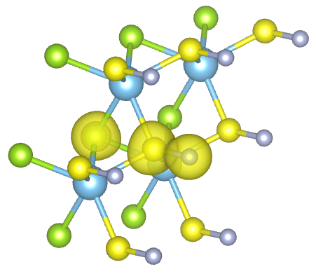
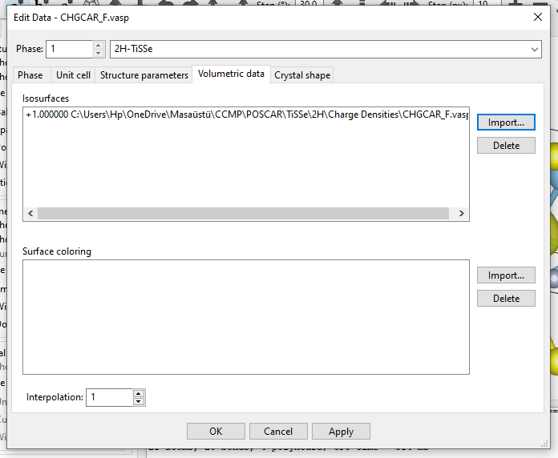
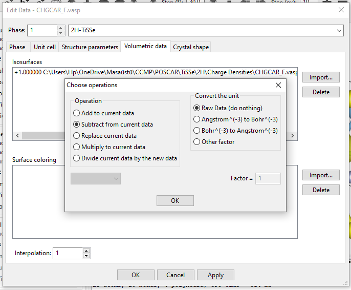
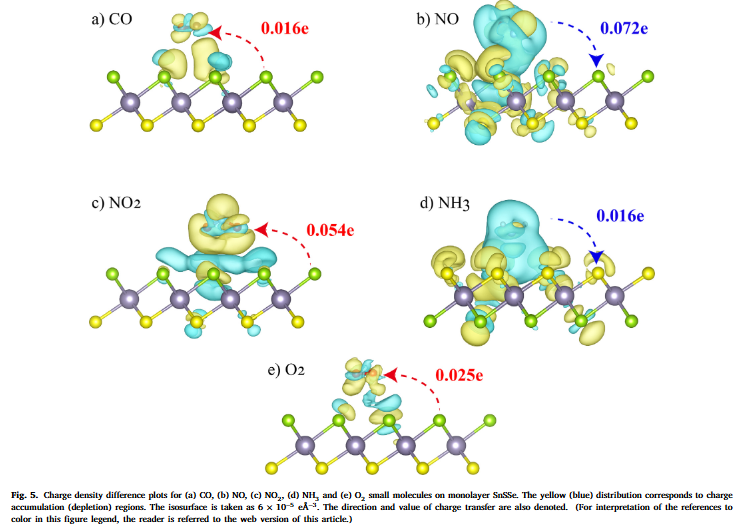
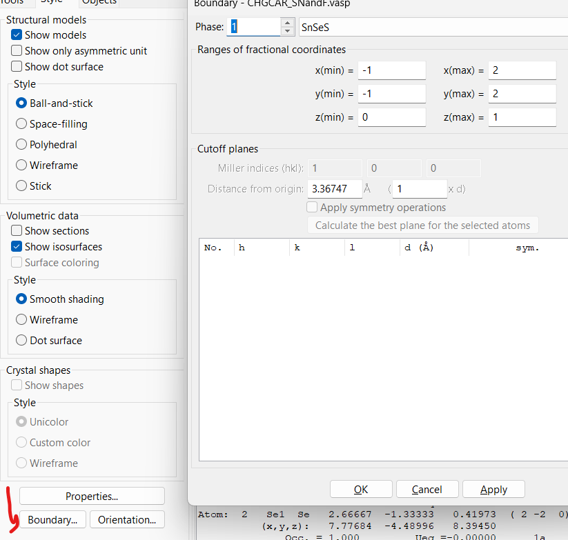
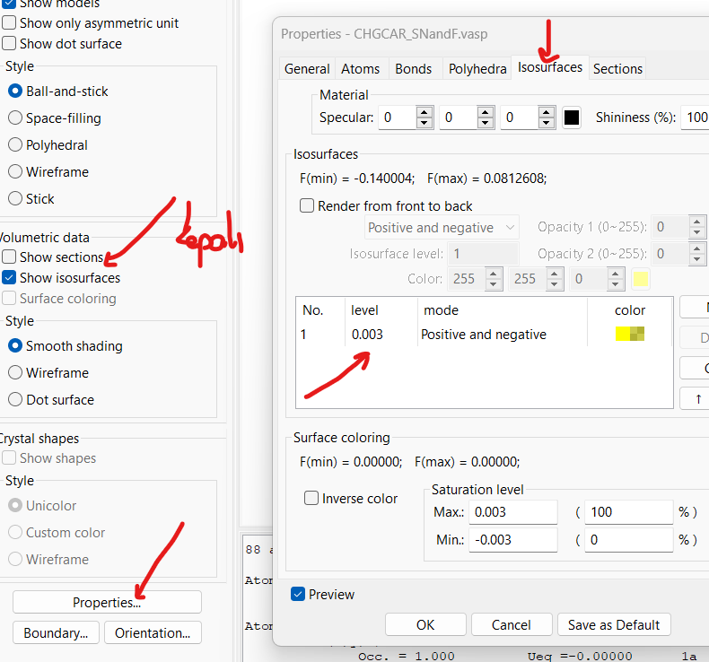

Florlanmış 2H-TiSSe örneğinde, üç CHGCAR dosyasından VESTA ile yük yoğunluğu farkı haritasını elde edin.
Yük yoğunluğu farkı için ilgili tüm konfigürasyonların CHGCAR dosyaları gerekir. Örnek sistem: florlanmış (fluorinated) 2H-TiSSe.
F-2H-TiSSe için üç CHGCAR dosyası gerekir: florlanmış TiSSe (fluorinated TiSSe), pristine TiSSe ve fluorene (yalnız F atomu).
Bu CHGCAR dosyalarını elde etmek ve 3B ızgarayı tutarlı tutmak için üç POSCAR dosyasının üçü de aynı POSCAR'dan türetilmelidir. F-2H-TiSSe olası tüm konfigürasyonları içerdiğinden diğer iki POSCAR dosyası ondan elde edilir.
2H-TiSSe
1.00000000000000
3.5690847323603263 0.0000000000000000 0.0000000000000000
1.7845423661801632 3.0909180464087322 0.0000000000000000
0.0000000000000000 0.0000000000000000 30.0000000000000000
Ti S Se F
1 1 1 1
Direct
0.0000000000000000 0.0000000000000000 0.5066384472992098
0.3333329860000021 0.3333329860000021 0.5491935922537721
0.3333329860000021 0.3333329860000021 0.4569639609570686
0.3333329860000021 0.3333329860000021 0.6043669714899380
0.00000000E+00 0.00000000E+00 0.00000000E+00
0.00000000E+00 0.00000000E+00 0.00000000E+00
0.00000000E+00 0.00000000E+00 0.00000000E+00
0.00000000E+00 0.00000000E+00 0.00000000E+00
KIRMIZI SATIRLARI SİLİN: PRISTINE 2H-TiSSe POSCAR'ı elde edilir
MAVİ SATIRLARI SİLİN: FLUORENE (yalnız F) POSCAR'ı elde edilir
| Yapı | POSCAR nasıl elde edilir |
|---|---|
| Florlanmış 2H-TiSSe (F-2H-TiSSe) | Yukarıdaki POSCAR olduğu gibi kullanılır. |
| Pristine 2H-TiSSe | Kırmızı satırlar silinir (F türü, F sayısı ve F koordinatı). |
| Fluorene (yalnız F) | Mavi satırlar silinir (Ti, S, Se türleri, sayıları ve koordinatları). |
System = 2H-TiSSe
PREC = Normal
ISTART = 0
ENCUT = 800
EDIFF = 1E-06
EDIFFG = -0.01
ISIF = 2
IBRION = 2
NSW = 200
POTIM = .1
ISYM = 1
NPAR = 4
IVDW = 1
#NBANDS = 8
LREAL = .FALSE.
LWAVE = .FALSE.
ISMEAR = 0
LCHARG = .TRUE.
| Etiket | Değer | Anlamı |
|---|---|---|
System | 2H-TiSSe | Sistemin adı (başlık). |
PREC | Normal | Hesap duyarlılığı (precision) modu. |
ISTART | 0 | Dalga fonksiyonlarını okumadan, sıfırdan başlar. |
ENCUT | 800 | Düzlem dalga taban kümesinin kesme enerjisi (eV). |
EDIFF | 1E-06 | Elektronik öz-tutarlı döngünün durma ölçütü (eV). |
EDIFFG | -0.01 | İyonik relaksasyonun durma ölçütü; negatif değer kuvvet ölçütüdür (eV/Å). |
ISIF | 2 | İyon konumları relaksasyona girer, hücre sabit kalır. |
IBRION | 2 | İyonları relaksasyona sokan eşlenik gradyan (conjugate gradient) algoritması. |
NSW | 200 | En çok iyonik adım sayısı. |
POTIM | .1 | İyonik adım boyutu çarpanı. |
ISYM | 1 | Simetri kullanımı açık. |
NPAR | 4 | Bantlar üzerinde paralel hesap ayarı. |
IVDW | 1 | van der Waals düzeltmesi (DFT-D2). |
#NBANDS | 8 | Satır # ile yorum yapılmıştır; hesaba katılmaz. |
LREAL | .FALSE. | Projeksiyon işlemleri ters uzayda yapılır. |
LWAVE | .FALSE. | WAVECAR yazılmaz. |
ISMEAR | 0 | Kısmi dolulukların belirlenmesi: Gaussian smearing. |
LCHARG | .TRUE. | Yük yoğunluğunu (CHGCAR) yazar. |
.vasp yapın (örneğin CHGCAR_F.vasp). Böylece dosyalar VESTA/.vasp dosyalarına dönüşür.Edit → Edit Data → Volumetric data sekmesine girin.Import… ile diğer CHGCAR dosyalarını (pristine 2H-TiSSe ve fluorene) içe aktarın.Subtract from current data seçeneğini işaretleyin.

Import… düğmesi (adım 3 ve 4).
Subtract from current data seçili; birim dönüşümü Raw Data (do nothing) (adım 5).Ortaya çıkan model yük yoğunluğu farkı haritasını verir. Örnek haritalar aşağıdaki makaleden alınmıştır: Zengin, Y., R. Caglayan ve Y. Mogulkoc (2023), SnSSe tek katmanı üzerinde küçük gaz moleküllerinin adsorpsiyonu.

Kaynakta, makaledeki örnekten sonra iki ek VESTA ekran görüntüsü verilmiştir; üzerlerinde kırmızı okla işaretlemeler vardır.
0.003, mod Positive and negative. Volumetric data altında Show isosurfaces işaretli, Show sections işaretsizdir (kaynaktaki el yazısı not: kapalı).
Boundary… düğmesi).
Show sections (kapalı), Properties… düğmesi, Isosurfaces sekmesi ve level değeri.Zengin, Y., R. Caglayan, and Y. Mogulkoc. "Adsorption of small gas molecules onto the two-dimensional Janus SnSSe monolayer." Computational Condensed Matter 36 (2023): e00815.
https://www.sciencedirect.com/science/article/pii/S2352214323000321